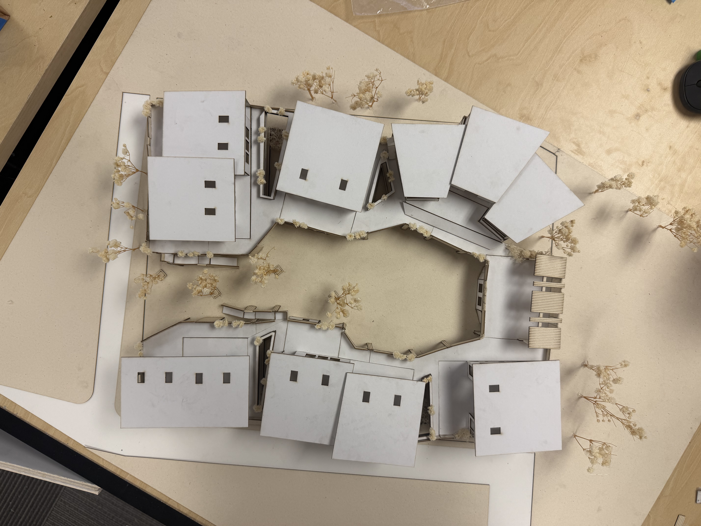

Design Beginnings
Design Fuego
View PDF Manual
This project covers the intoduction of using coding to create projects. This was an introduction of ourselves to the class.
Logo A/B/C
View PDF Manual
This project was for us to get comfotable using AI. We used three different softwares to use their AI template to design a logo around us.
UX Testing Logo Project
View PDF Manual>
This project was us using a type of research technique that was evloved around design. We had to interview people on their thoughts about our logo designs.
Good Design
View PDF Manual
This project was for us to start using the software of InDesign. We explored good design techniques and used what we learned from the book of why they are good designs.